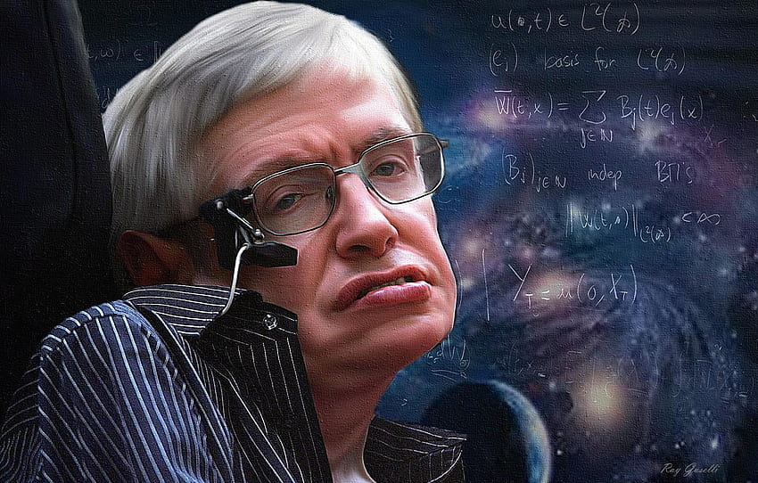

<!DOCTYPE html>
<html lang="en">
<head>
    <meta charset="UTF-8">
    <title>A Tribute Page of Stephen william hawking</title>
    <link rel="stylesheet" href="style1.css"
</head>    
</html>
<body>
    <div id="heading">
         <h1>Stephen William Hawking</h1>
         <h3>(1942-2018)</h3>
    </div>  
    <div>
         
    </div>
    <div id="quotes">
         <h3>"Remember to look up at the stars and not down at your feet.
            <br> Try to make sense of what you see and wonder about 
            what makes the universe exist. 
            <br> Be curious. 
            And however difficult life may seem,<br> 
            there is always something you can do and succeed at. 
            <br>It matters that you don't just give up."
         </h3> 
         <h3>-Prof Stephen Hawking</h3>
    </div>
    <div id="info">
         <h3>Stephen Hawking's Bio</h3>
         <p> Stephen Hawking (January 8, 1942 to March 14, 2018) was a British scientist, 
            professor and author who performed groundbreaking work in physics and cosmology, 
            and whose books helped to make science accessible to everyone. At age 21, while studying cosmology at the University of Cambridge,
            he was diagnosed with amyotrophic lateral sclerosis (ALS). 
            Part of his life story was depicted in the 2014 film The <i> Theory of Everything.</i></p>
         
         <h3>Stephen Hawking's books</h3>
         <ul>
            <li><strong><i> Brief History of Time</i></strong> In 1988 Hawking released this informative book about the overview of space, time, and the existence of god. This became an instant best seller , selling millions of copies.</li>
            <li><strong><i>The Universe in a Nutshell </i></strong> A Brief History of Time also wasn't as easy to understand as some had hoped. So in 2001, Hawking followed up his book with The Universe in a Nutshell, which offered a more illustrated guide to cosmology's big theories.</li>
            <li><strong><i>The Grand Design </i></strong> The Grand Design was Hawking's first major publication in almost a decade. Within his new work, Hawking set out to challenge Sir Isaac Newton's belief that the universe had to have been designed by God, simply because it could not have been born from chaos. "It is not necessary to invoke God to light the blue touch paper and set the universe going," Hawking said.</li>
        </ul>
        
         <h3>His other great accomplishments</h3>
         <ul>
            <li>He did groundbreaking work in singularities</li>
            <li>Hawking co-discovered the four laws of black hole mechanics</li>
            <li>His most significant theory is that black holes emit the hawking radiatin</li>
            <li>He contributed to the theory of inflation</li>
            <li>He received numerous awards including the Gold Medal of the RAS</li>
         </ul>
         <h4>For more infomation on Stephen Hawking's life click <a href="https://en.wikipedia.org/wiki/Stephen_Hawking">here</a></h4>
    
    </div>
</body>
